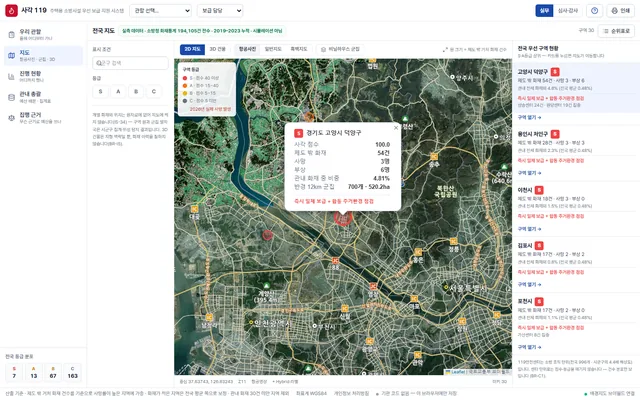
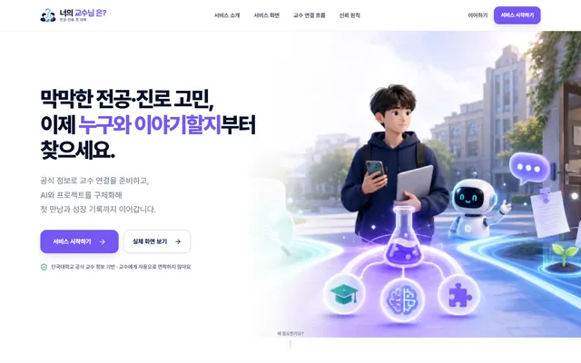
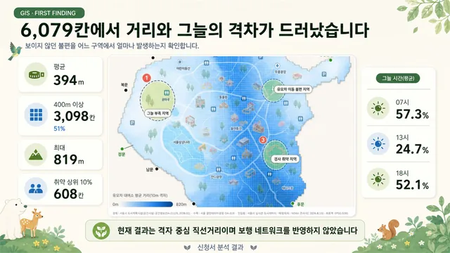
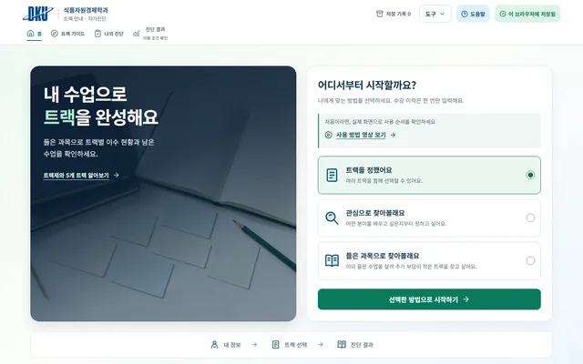
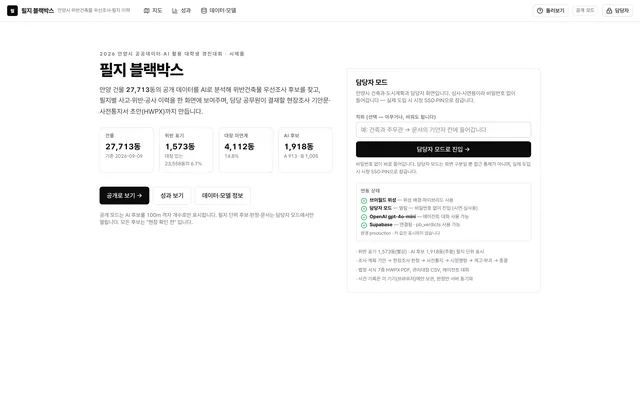
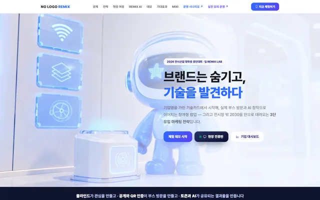

교육 봉사
안녕하세요,
이연수 Lee Yeonsoo
데이터 분석 · AI 서비스 기획 · AX
- 과학기술정보통신부장관상 · 대상
- 행정안전부장관상 · 최우수상
- 비짓서울 공모전 대상 · 팀 도달
- 소방청장상 · 최우수상 · 팀 119insight
- UNIKER 1기 팀장·PM
- 상격 확정 19건 · 상격 확인 중 1건
단국대학교 수학과·식품자원경제학과 복수전공, 2027.02 졸업 예정
데이터로 이유를 찾고, AI로 쓰임을 만듭니다.
수학·식품자원경제학을 바탕으로 관광·안전·복지 데이터를 분석합니다.
분석 결과를 해석해 사용자의 다음 행동을 돕는 서비스 흐름을 설계합니다.
프로젝트에 따라 팀장·PM·분석을 맡았습니다.
Ask me
궁금한 점을 직접 물어보세요
질문을 고르면 제가 직접 답합니다. 스피커 버튼을 누르면 답을 음성으로 들을 수 있습니다.
- 192026 수상
- 2장관상
- 19프로젝트
이연수에게 물어보기직접 답변합니다
Selected Work
분석과 서비스 기획 사례
관광·안전·교육 데이터를 분석하고 서비스 흐름을 설계한 대표 사례입니다.

우수상 · 한국문화관광연구원장상
사람은 오는데, 왜 머물지 않을까?이동 조건을 고려한 관광 체류 격차 분석과 지역별 정책 과제 제안
최우수상 · 소방청장상
사각119화재 취약 거처의 방문 우선순위와 행정 문서 작성 흐름을 설계한 팀 시제품

대상 · 서울관광재단 대표이사상
지금서울방문 전 관광 정보 안내와 재단의 정보 수정 검토 절차 설계
최우수상
나란히10m 격자 분석으로 제안한 공원 이용 안내와 시설 개선 과제

심층제안 최우수상 · 축산물품질평가원장상수상 확정 · 시상 안내 2026.10.28
다봄기존 '다봄' 서비스의 가격 비교 기능을 개선하는 규칙 기반 프로토타입

우수상 · 단국대학교 총장상
같은 이름, 다른 기억지명 하나로 여러 지역의 맥락을 비교하고 공식 기록과 AI 해석을 구분한 지도
장려 등급충북인공지능산업협회장상수상 확정 · 시상 예정 · 시상식 2026.11.25
바람의 지도바깥놀이 전 대기질 확인 시점과 담당자 승인 절차 설계


최우수상 · 안양시장상
필지 블랙박스위반건축물 현장조사 순서를 정하고 처분 공문 초안까지 만드는 안양시 담당자용 웹 서비스

장려상 · 한국임업진흥원장상
산촌 순환지수(FCI)산촌의 방문·공급 지표로 지역별 정책 과제를 제안한 시범 분석

Activities
대외활동과 연구 경험
AI 크루·창업팀 팀장·PM과 연구실 인턴을 거쳐, 지금은 SW교육 봉사를 합니다.
- 진행 중
2026 하반기 찾아가는 SW교육기부단
코드클럽한국위원회 · 코딩탐정단 팀 담당자
SW교육 현장에서 배운 기술과 문제 해결 경험 공유
커널아카데미 대학생 AI 크루 UNIKER 1기
데이원컴퍼니 · 팀 트리온 (3인) 팀장·PM
「너의 교수님은?」 문제 정의·사용자 흐름·화면 검수·발표 담당 · 2026.08.31 데모데이 발표·수료
단국대학교 식품자원경제학과 연구실 인턴
단국대학교 식품자원경제학과 · 연구 보조
식품 표시·광고와 소비자 인식 연구 보조 · 제품·소비자 인식 자료 수집·분류
대학생 동계방학 행정 서포터즈
서울시 강서구청 · 행정 서포터즈
구청 행정 업무 지원
베스터 — 지역축제 데이터·AI 리포팅
예비창업팀 베스터 · 팀장 · 데이터 분석 담당
지역축제 방문객 분석·AI 리포팅 서비스 기획 · 분석 업무와 팀 산출물 조율 · 2025.02 광운대학교 캠퍼스타운 입주기업 선정·입주
Education & Volunteering
수료 과정과 교육 봉사
AI·데이터·금융 과정을 수료했고, 지금은 SW교육 봉사를 합니다.
우수 수료
EST AI Challengers 1기
자격
NAVER Cloud Platform Certified Associate
전체 17개 타임라인 보기진행 중 2교육 봉사 1수료 11자격 3
- 2026.09–교육 봉사2026 하반기 찾아가는 SW교육기부단SW교육 현장에서 배운 기술과 문제 해결 경험 공유
- 2026.09–진행 중NEXT-PHASE AX 클라우드 트랙이수 시 DKU AX 마이크로디그리 취득
- 진행 중네이버클라우드 아카데미 Literacy
- 2026.11.06우수 수료EST AI Challengers 1기
- 2026.11수료2026 데이터+AI 크리에이터 캠프
- 2026.11수료청년 국가재정 마스터 정책연구
- 2026.10.23자격NAVER Cloud Platform Certified Associate
- 2026.08.31수료커널아카데미 대학생 AI 크루 UNIKER 1기
- 2026.07.08수료AI 상상그라운드 상상클래스
- 2026.06.22수료청년 국가재정 마스터 클래스
- 2026.06.09수료Google AI Professional Certificate
- 2026.06.08자격Google Analytics Certification
- 2026.05.20·29수료인문학, AI를 만나 지도를 그리다
- 2026.04.02수료금융사관학교 74기 국제경제전문가
- 2026.03–06수료대학생 일경험 WE-Meet 프로젝트
- 2026.02.07수료단국 직무아카데미 · IT개발/데이터
- 2021.12.18자격e-Test OA 마스터 2급
Awards & Competitions
공모전 수상과 진행 현황
상격이 확인된 수상 19건과 수상 확정·상격 확인 중 1건입니다. 시상 예정과 발표·심사 진행 상태를 구분했습니다.
2건
장관상
온지붕 · 선택에서 필수로
2건
대상
온지붕 · 지금서울
5건
최우수상
필지 블랙박스 · 선택에서 필수로 · 사각119 · 나란히 외 1건
수상 확정 · 상격 확인 중
- 농산물 소득조사 데이터 분석농촌진흥청장상 확정 · 상격은 결선 후
3인 팀 · 51개 세부 작목 소득조사 자료로 경영비·소득률 분석 · 결선 2026.11.20 후 상격(대상·최우수·우수) 확정.
심사·결과 대기
- LOTTE AX CHALLENGE 2026본선 진출
롯데의 비즈니스 과제에 AI 활용 해결안을 제안해 본선 진출. 본선 2026.11.24–25(1박 2일)에서 AI 에이전트 개발·결과물 시연·최종 평가.
- 다봄 팀 · 식품 데이터 캡스톤참가팀 선정 · 과제 수행 중
선정 10팀 중 시상 4팀. 결과물 2026.11.23 제출 → 11.25 우수과제 선정 → 11.27 시상 예정.
최근 소식
- 수상
안양시 공공데이터·AI 활용 대학생 경진대회 최우수상 · 안양시장상 · 「필지 블랙박스」 (최종 4팀 중 1위)
원문: 안양시 공공데이터·AI 활용 대학생 경진대회 최우수상 · 안양시장상 · 「필지 블랙박스」 (최종 4팀 중 1위) (새 창)
- 수상
제3회 미래융합인재 발굴 소프트웨어 챌린지 일반부 대상 · 과학기술정보통신부장관상 · 「온지붕」
원문: 제3회 미래융합인재 발굴 소프트웨어 챌린지 일반부 대상 · 과학기술정보통신부장관상 · 「온지붕」 (새 창)
- 선정·합격
국가표준식품성분DB 활용 아이디어 공모전 2차 발표평가 대상 선정 · 「간 맞춤표」 · 11.06 발표 예정
원문: 국가표준식품성분DB 활용 아이디어 공모전 2차 발표평가 대상 선정 · 「간 맞춤표」 · 11.06 발표 예정 (새 창)
- 수상
국민체육진흥공단 공공데이터 활용 경진대회 우수상 · 이사장상 · 「먼저봄」
- 선정·합격
2026 식품 데이터 캡스톤디자인 경진대회 참가팀 선정(10팀) · 팀 다봄 과제 수행 중
원문: 2026 식품 데이터 캡스톤디자인 경진대회 참가팀 선정(10팀) · 팀 다봄 과제 수행 중 (새 창)
- 수상
AI기반 지속 가능한 통일 아이디어 공모전 우수상 · 「179 수요지도」 (본선 5팀 중 2위)
이전 소식 19개 더 보기
- 본선 진출
「필지 블랙박스」 안양시 공공데이터·AI 활용 대학생 경진대회 최종 4팀 선정
- 수상
「선택에서 필수로」 공중화장실 혁신아이디어 공모전 최우수상·행정안전부장관상 확정 · 11.18 시상 예정
- 선정·합격
SK하이닉스 AI 해커톤 2026 서류 전형 합격
- 선정·합격
2026 AI·디지털 기반 사회문제 해결 챌린지 서류심사 합격 · 「선입금시그널」 · 팀 스타트링크
- 수상
「같은 장면, 다른 정보」 XR 협업 플랫폼 서비스 아이디어 부문 우수상·한국과학기술정보연구원장상
원문: 「같은 장면, 다른 정보」 XR 협업 플랫폼 서비스 아이디어 부문 우수상·한국과학기술정보연구원장상 (새 창)
- 수상
2026 비짓서울 API 데이터·AI 활용 아이디어 공모전 대상 (서울관광재단 대표이사상) · 「지금서울」
원문: 2026 비짓서울 API 데이터·AI 활용 아이디어 공모전 대상 (서울관광재단 대표이사상) · 「지금서울」 (새 창)
- 수상
대구도시개발공사 공공데이터 활용 아이디어 공모 우수작 1위 · 「매입임대주택 예측정비 플랫폼」
원문: 대구도시개발공사 공공데이터 활용 아이디어 공모 우수작 1위 · 「매입임대주택 예측정비 플랫폼」 (새 창)
- 수상
2026 관광데이터 분석 포스터 공모전 우수상 (한국문화관광연구원장상) · 「사람은 오는데, 왜 머물지 않을까?」
원문: 2026 관광데이터 분석 포스터 공모전 우수상 (한국문화관광연구원장상) · 「사람은 오는데, 왜 머물지 않을까?」 (새 창)
- 수상
제13회 전국 ICT융합 공모전 충북인공지능산업협회장상 · 「바람의 지도」
- 수상
제6회 소방안전 빅데이터 활용 및 아이디어 경진대회 서비스개발 부문 최우수상 (소방청장상) · 「사각119」
원문: 제6회 소방안전 빅데이터 활용 및 아이디어 경진대회 서비스개발 부문 최우수상 (소방청장상) · 「사각119」 (새 창)
- 수상
2026 축평원 MEET YOUR IDEA 공모전 심층제안 최우수상 (축산물품질평가원장상) · 「다봄」
원문: 2026 축평원 MEET YOUR IDEA 공모전 심층제안 최우수상 (축산물품질평가원장상) · 「다봄」 (새 창)
- 수상
2026 임업통계 활용 경진대회 아이디어 부문 장려상 (한국임업진흥원장상) · 「산촌 순환지수(FCI)」
- 수상
2026 서울어린이대공원 AI기반 서비스 아이디어 공모전 최우수상 · 「나란히」
- 수상
KISTI 개방형 XR 협업 플랫폼 서비스 아이디어 도출 경진대회 우수상 (부문 1) · 「같은 장면, 다른 정보」
- 진행 중
2026 하반기 찾아가는 SW교육기부단 활동 시작 · 코드클럽한국위원회 · 코딩탐정단 팀 담당자
- 수강 중
NEXT-PHASE AX 클라우드 트랙 수강 시작 · DKU AX 마이크로디그리 과정
- 수료
커널아카데미 대학생 AI 크루 UNIKER 1기 수료 · 데모데이 발표 · 팀 트리온 팀장·PM
원문: 커널아카데미 대학생 AI 크루 UNIKER 1기 수료 · 데모데이 발표 · 팀 트리온 팀장·PM (새 창)
- 수상
2026 달서 전국 대학생 AI활용 아이디어 콘테스트 입선 (달서구청장상) · 「달서 미리온(ON)」
- 수상
「말잇다 · VOICE MATE」 디지털 포용 분야 본선 선정 · 수상 확정, 최종 상격 미정
원문: 「말잇다 · VOICE MATE」 디지털 포용 분야 본선 선정 · 수상 확정, 최종 상격 미정 (새 창)
Skills & Tools
분석·구현·협업 도구
분석·구현·조사·협업에 쓰는 도구입니다.
- 분석전처리·통계 분석·모델 비교와 결과 해석
- 구현화면 구현·오류 진단·사용 흐름 검수
- 조사자료 조사·분석 방향 탐색·해석 비교
- 협업공동 설계·검토·시각화·프로젝트 기록
- 함께 쓰는 도구프로젝트마다 함께 쓰는 언어·시각화·배포 도구
- 1PyPython
- 2RR
- 3Pdpandas
- 4Skscikit-learn
- 5CxCodex
- 6ReReact
- 7TsTypeScript
- 8GpGPT
- 9ClClaude
- 10CcClaude Code
- 11FgFigma
- 12NoNotion
- 13JsJavaScript
- 14HcHTML/CSS
- 15JuJupyter
- 16ViVite
- 17NdNode.js
- 18NpNumPy
- 19SpSPSS
- 20TbTableau
- 21MpMatplotlib
- 22PlPlotly
- 23SbSeaborn
- 24VcVercel
- 25GmGemini
- 26GfGoogle Flow
분석 방법
How I Work
일하는 방식
문제와 판단 기준을 먼저 정하고, 팀 작업과 사용자 흐름을 조율·점검합니다.
비교 기준과 결과 해석
비교 기준과 해석 범위를 먼저 정하고 분석 결과에서 다음에 풀 질문을 찾습니다.
관광·성장기업 분석
사용자 흐름과 예외 점검
입력·결과·다음 행동의 흐름을 설계하고 오류와 예외 상황을 직접 점검합니다.
UNIKER·트랙제
팀의 역할과 산출물 조율
문제와 검토 기준을 함께 정하고 기획·분석·개발 담당자의 작업을 조율합니다.
PM·팀장 경험
SW교육 봉사
SW교육 봉사에서 기술을 쉽게 설명하고 함께 써 봅니다.
코딩탐정단 · 참여 중
AI와 나누는 작업
- 1조사
- 2제작
- 3결과 점검
- 반복 작업은 AI에 맡기고 문제 정의와 결과 해석을 담당합니다.
- Codex화면 구현·오류 진단·사용 흐름 점검교수 탐색의 서버·화면 오류 진단과 검색 조건 복원·화면 폭별 결과 표시 점검
- GPT · Claude리서치·해석 비교공개자료 탐색과 분석 방향 비교
- Claude분석 코드 작성 보조관광 분석의 전처리·모형·검증 코드 작성 보조
- Claude Code공동 설계·대안 비교구성·원고·구현 대안 작성과 비교
Contact
데이터 분석·AI 기획을 함께하겠습니다
이연수 · Lee Yeonsoo · 데이터 분석 · AI 서비스 기획 · AX
데이터 분석과 AI 기획으로,
팀의 문제를 구체화하고
실행할 방법을 함께 찾겠습니다.